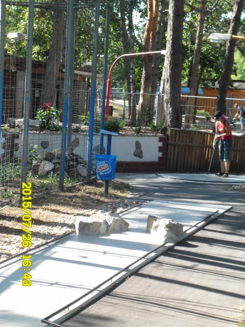

pro Person / eine Runde
Die Ranch /Eine Runde.
MINIGOLF IN DEUTSCH-WAGRAM
Eine Runde.
Viel Natur.
Gute Gesellschaft.
Schläger in die Hand, Alltag aus. Genießen Sie eine Runde Minigolf im Grünen – mit Familie, Freunden oder als Pause auf Ihrer Radtour.

Eine Runde im Grünen Am Radweg „Dampfross“ Mit Flutlicht bis 22 Uhr
ZEIT FÜR EINE KLEINE AUSZEIT
Das Ziel?
Eine gute Zeit.
Unsere Minigolfanlage ist von Wald umgeben. Ob Sie jeden Schlag zählen oder einfach gemeinsam draußen sein möchten: Hier lässt sich der Restaurantbesuch mit einer Runde Minigolf verbinden.
Sie sind mit dem Rad unterwegs? Die Anlage liegt direkt am Radweg „Dampfross“.
Route zur Ranch planenEINFACH EINE RUNDE SPIELEN
Die Preise im Überblick.
Preise für eine Runde Minigolf.
pro Kind / eine Runde
pro Begleitperson
Bei Fragen zu anderen Altersgruppen oder einem Gruppenbesuch helfen wir Ihnen gerne weiter. Preise laut veröffentlichter Originalseite, Stand 8. September 2026.
Frage zum Minigolf stellenAUSFLUG & GENUSS
Danach noch etwas Gutes?
Verbinden Sie Ihren Besuch mit einem Essen in unserer Grill Ranch.